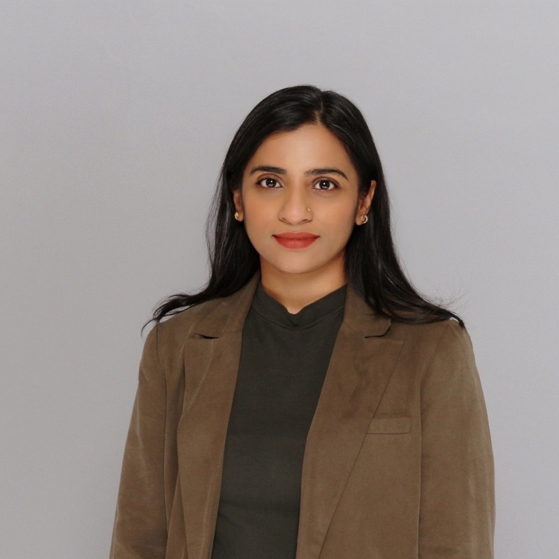

PhD Candidate, Pharmaceutical Sciences2023 – Present
University of British Columbia, Vancouver
Respiratory Evaluation Sciences Program · Supervisor: Dr. Mohsen Sadatsafavi

PhD Candidate · Pharmaceutical Sciences, UBC · Vancouver, BC
My journey into health research is rooted in personal experience. Growing up with asthma in Bangladesh, I witnessed the challenges of managing a chronic illness within an under-resourced healthcare system. These early experiences shaped my commitment to improving health outcomes.
Always curious to learn more and open to meaningful conversations and collaborations. Please do not hesitate to connect!
No upcoming presentations at this time.